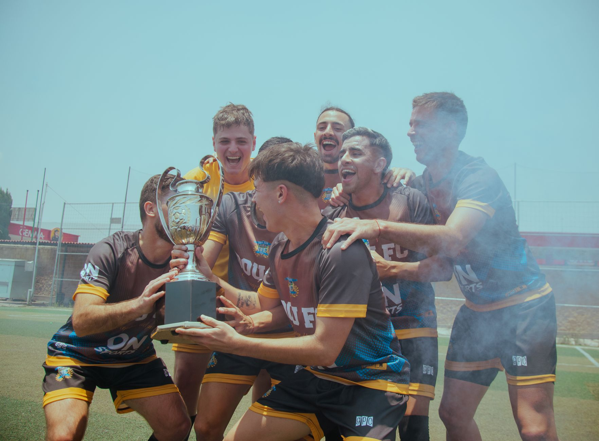

Eternal Fire secures a major competitive milestone
The competitive landscape of Counter-Strike 2 is shifting rapidly, and Eternal Fire has once again proven why they are a team to watch on the international stage. By successfully navigating the preliminary stages, the Turkish powerhouse has officially punched their ticket to the IEM Beijing closed qualifier. This achievement marks a significant step forward for the organization as they aim to compete against the world's elite in China.
Securing a spot in a closed qualifier is never an easy feat. It requires not only mechanical skill but also immense tactical discipline and the ability to perform under high-pressure environments. Eternal Fire's journey through the recent matches has shown a level of consistency that has caught the attention of analysts and fans alike across the global esports community.
The path to the IEM Beijing main event
Intel Extreme Masters (IEM) Beijing is one of the most prestigious stops on the professional Counter-Strike circuit. The tournament attracts top-tier teams looking to secure massive prize pools and global recognition. However, the path to the main event is gated by a rigorous qualification process designed to weed out all but the most deserving squads.
The closed qualifier serves as the final hurdle before the grand stage. In this phase, teams will face off in a high-stakes bracket where a single loss can end a season's ambitions. For Eternal Fire, this means they must prepare for a variety of playstyles, ranging from aggressive riflers to highly disciplined tactical setups.
Analyzing the performance of the Turkish roster
What exactly allowed Eternal Fire to rise above the competition during this qualifying period? Observers have pointed to their exceptional map pool and their ability to adapt mid-round. Unlike many teams that rely on a single signature map, Eternal Fire has shown proficiency across several key layouts in the current CS2 meta.
Eternal Fire has demonstrated a level of resilience that is rare in the current CS2 era, proving that their tactical depth matches their raw aim.
Their communication during clutch situations has also been a standout feature. In professional Counter-Strike, the difference between a win and a loss often comes down to a split-second decision made during a 2v2 or 3v2 situation. Eternal Fire's ability to maintain composure during these high-tension moments has been their greatest asset throughout the qualifying rounds.
What to expect from the upcoming closed qualifier
The upcoming closed qualifier for IEM Beijing is expected to be one of the most competitive in recent memory. With several Tier-1 teams fighting for the remaining slots, the margin for error will be non-existent. Eternal Fire will not just be fighting against individual skill, but against some of the most sophisticated utility usage and strategic setups in the game.
Fans should keep a close eye on how the team handles utility management. As the CS2 meta evolves, the way teams use grenades, smokes, and flashes to control space has become increasingly complex. Teams that fail to master these nuances often find themselves at a disadvantage against more prepared opponents.
Connecting tactical mastery with professional play
As we watch teams like Eternal Fire prepare for the rigors of IEM Beijing, it is important to understand the granular details that define high-level play. Success in CS2 is not just about clicking heads; it is about the mathematical and strategic application of tools to create advantages. This level of detail is what separates the champions from the rest of the field.
For instance, understanding how to utilize specific utility to disrupt an opponent's defense is a hallmark of the world's best players. If you are interested in learning more about these high-level tactical nuances, you should read our deep dive where magixx Explains Team Spirit’s Nuke HE Strategy in CS2, which provides a fantastic look at how professional teams use utility to dominate specific maps.
Whether it is Eternal Fire's upcoming run in Beijing or the strategic masterclasses seen in other major tournaments, the evolution of Counter-Strike 2 continues to provide endless entertainment and learning opportunities for fans of the esport.
See Also
If you enjoyed this Esports News article, check out magixx Explains Team Spirit’s Nuke HE Strategy in CS2 for more useful reading.